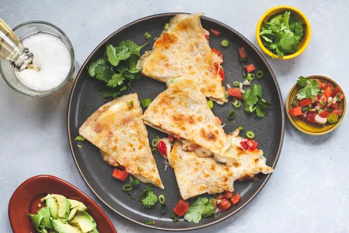

Quesadilla

Is there a more perfect food than a quesadilla? They’re simple to
assemble, quick to cook, and satisfy every carby, cheesy craving we could
ever have. We enjoy them for a quick lunch, a cheap and easy dinner, and
especially as a midnight snack. Okay okay, sure, you’re probably thinking
you don’t really need a recipe for this insanely popular Mexican dish.
A quesadilla is a Mexican dish that dates back to the 16th century.
Traditional quesadillas were made with a corn tortilla that was warmed on
a griddle, filled with cheese and various other fillings (meat,
vegetables), and then folded over to be eaten by hand.
Ingredients
- Large flour tortillas
- Grated cheese such as mild or sharp cheddar, or Monterey Jack
- Sliced mushrooms
- Green onions
- Black olives, sliced
- Fresh tomatoes, diced
- Chicken pieces
- Avocado
- Lettuce
- Apple cider vinegar
- Kosher salt
- Olive oil or butter
Steps
-
Heat a large skillet (cast iron works great) on medium high heat. Add a
small amount of oil (about 1/2 teaspoon) and spread it around the bottom
of the pan with a spatula (you could use butter as well).
-
Take one large flour tortilla and place it in the pan. Flip the tortilla
over a few times, 10 seconds between flips. Air pockets should begin to
form within the tortilla.
-
When pockets of air begin to form, take a handful of grated cheese,
sprinkle over the top of the tortilla, making sure that the cheese does
not land on the pan itself.
-
Add whatever additional ingredients you choose - green onion, sliced
mushrooms, olives, tomatoes, etc. If you would like your quesadilla to
be a chicken quesadilla, add some diced cooked chicken.
Take care
not to layer on the ingredients too thickly - this is a quesadilla, not
a quiche!
-
Reduce the heat to low and cover the pan. The pan should be hot enough
by now to have plenty of residual heat to melt the cheese and brown the
tortilla. If the quesadilla begins to smoke too much, remove from the
heat.
-
After a minute, check to see if the cheese is melted. If not, return the
cover and keep checking every minute until the cheese is melted.
When the cheese is sufficiently melted, use a spatula to lift up
one side of the quesadilla and flip over the other side, as if you were
making an omelette.
-
The tortilla should by now be browned slightly. If it is not browned,
turn the heat up to high and flip the quesadilla over every 10 seconds
or so until it gets browned.
-
Remove quesadilla from pan cut into wedges.
To make the lettuce to accompany the quesadilla, thinly slice some
iceberg lettuce. Sprinkle some cider vinegar on it and some salt. Serve
with the lettuce, salsa, sour cream, and guacamole.
Return to Top
Return to Home